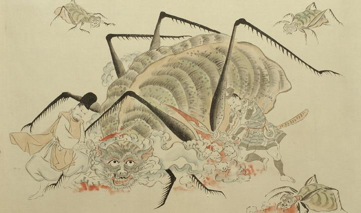

蜘蛛の化物。頭部は獣のようで、目玉は大きく、鼻は潰れている。口は歪んで裂け、上顎の左右に牙が生え、大きな歯が並んでいる。口の周りにひげのようなものが生えている。胴体は頭部に比べて大きく縞模様で、左右に4本ずつ足が生えている。足は長く、真ん中で折れ、脛節の部分は棘のように枝分かれしている。左手の侍に頭部と胴体の継ぎ目を、右手の侍に腹部を切られて、赤い血を流している。腹部の切り口から、髑髏が10個ほどはみ出ている。頭部と胴体の継ぎ目および体の左手から煙のようなものが出ている。
出典：親書誌：U426_nichibunken_0056：土蜘蛛草紙；ツチグモソウシ／日付：2007／資源識別子：U426_nichibunken_0056_0007_0001
Copyright (c)2010- International Research Center for Japanese Studies, Kyoto, Japan. All rights reserved.